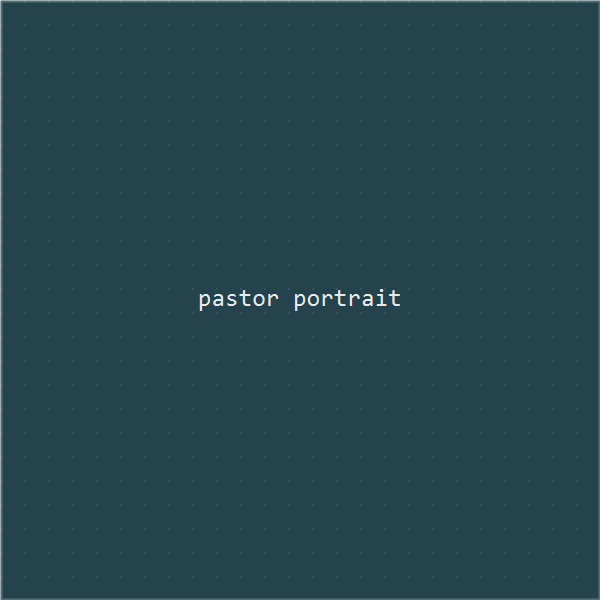

11:00 AM · Fellowship Hall
Who Will Take The First Step?
Rev. Edward Lu · November 8, 2026
Live here every Sunday at 11:00 AM; the latest service plays in between.
English Congregation · 英語堂
A church family where you can know God, grow in faith, and belong.
11:00AM · Sunday Worship10:00AM · Sunday School
認識我們
Connect Ministry is the English-language congregation of Monterey Park Chinese Baptist Church. We are a multigenerational church family growing together through worship, biblical teaching, fellowship, and service.
Connect Ministry is a diverse group of varying ages, ethnicities, and backgrounds. We care about your forgiveness and restoration, and about your kids and youth.
Whether you are exploring Christianity, returning to church, or looking for a church family, we invite you to come as you are.

Pastor Ed Lu講道及直播
11:00 AM · Fellowship Hall
Rev. Edward Lu · November 8, 2026
Live here every Sunday at 11:00 AM; the latest service plays in between.
團契及事工
College students & young adults
West Covina (please verify)
Mon 6:30–9:00 PM
Adults
Online (please verify)
Thu 7:30–9:00 PM
Junior high
Education Annex
Sun 11:00 AM–12:00 PM
崇拜期間的兒童事工
[Is MPCBC KIDS running during this service? e.g. “Children’s Sunday School runs during this service, 1st floor, Education Annex.”]

歡迎您前來
Sundays at 11:00 AM in the Fellowship Hall, 302 W. Commonwealth Ave., Alhambra.